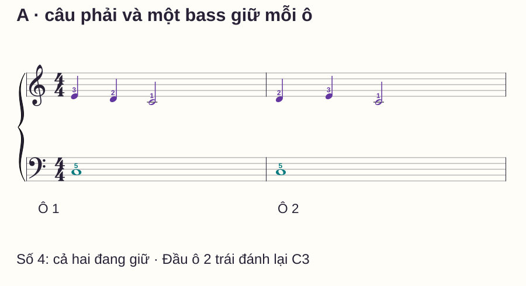
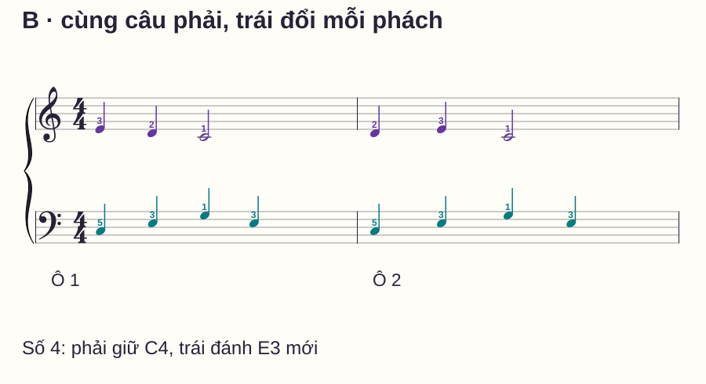
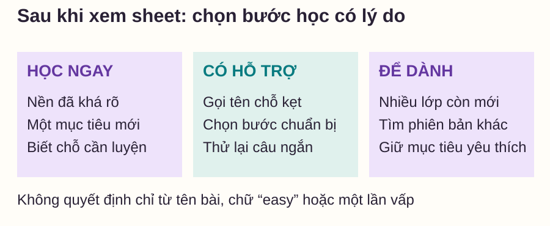

Tác phẩm
Chọn bản piano đầu tiên: kiểm sheet thay vì chỉ nhìn tên
# Chọn bản piano đầu tiên: kiểm sheet thay vì chỉ nhìn tên
Bạn tìm một ca khúc yêu thích có chữ “easy”, nhưng mở sheet ra thấy tay trái chạy liên tục và giữa bài có một đoạn khó hơn hẳn phần đầu. Một tên bài có thể có nhiều bản chuyển soạn, phục vụ những mức kỹ năng rất khác nhau.
Bài này không xếp danh sách ca khúc dễ theo lời hứa chung. Bạn sẽ xem hai phiên bản gốc cùng giai điệu, kiểm nhiệm vụ cụ thể và ghi một kết luận có lý do: học ngay, học với hỗ trợ hay để dành. Cách kiểm dùng được khi xem một bản nhạc mới mà chưa cần luyện toàn bộ.
Trả lời nhanh
Để chọn bản piano đầu tiên, xem đúng phiên bản sheet bạn định học và kiểm nốt/khóa, hình nhịp, vị trí tay, nhiệm vụ của hai bè cùng phần khó nhất của toàn bản. Thử một câu ngắn ở tempo vừa sức, ghi rõ việc đã làm được và việc cần học thêm. Cùng giai điệu có thể dễ hơn khi trái chỉ giữ bass, khó hơn khi trái đổi nốt mỗi phách. Chữ “easy”, tên bài quen hoặc mức của nhà xuất bản chỉ là điểm tham khảo. Chọn một mục tiêu mới đủ rõ, thay vì cùng lúc phải học đọc khóa, đổi thế, ghép nhịp và pedal chưa biết.
Vì sao thích bài nhạc và chọn đúng phiên bản là hai việc cùng cần?
Trinity College London — Choosing repertoire for new students nhấn mạnh sở thích và vai trò chủ động của người học khi chọn nhạc. Bạn có lý do để giữ một ca khúc yêu thích trong danh sách, nhưng vẫn cần tìm phiên bản phù hợp với nhiệm vụ hiện tại.
Một mức độ khó cũng không chuyển thẳng thành số tháng học. Henle — Levels of Difficulty mô tả nhiều yếu tố trong việc đánh giá, như nhịp, mật độ, kỹ thuật, yêu cầu âm nhạc và những đoạn khó nhất; con số là điểm định hướng, có phần phụ thuộc người chơi. “Easy” trong một hệ thống không đồng nghĩa ngày đầu ai cũng chơi được.
Vì vậy, hãy ghi cả tên bài, người chuyển soạn/ấn bản và sheet đang dùng. Nếu đổi sang video hoặc bản in khác, cần kiểm lại nốt, thế và cấu trúc; đừng giả định chúng có cùng độ khó vì cùng tên ca khúc.
Năm câu hỏi để xem một sheet
| Câu hỏi | Điều cần nhìn | Ví dụ về việc cần học thêm |
|---|---|---|
| Đọc được thông tin chính chưa? | Khóa, hóa biểu, vùng cao độ, dấu hóa | Có đọc được khóa Fa ở chỗ tay trái vào không? |
| Đếm được hình nhịp chưa? | Nốt ngắn, nốt giữ, nghỉ, điểm lệch giữa hai bè | Một tay giữ trong khi tay kia đổi |
| Tay phải dịch tới đâu? | Vùng đàn, bước nhảy, chỗ chuyển thế | Có biết đích sau khi nhấc tay không? |
| Hai bè làm gì cùng lúc? | Số điểm vào và nhiệm vụ mỗi tay | Bass tròn khác rải hợp âm mỗi phách |
| Cả bản có chỗ khó hơn không? | Đoạn giữa, kết, nhắc lại, chỉ dẫn tempo/pedal | Đầu dễ nhưng cuối thêm quãng nhảy |
Không chỉ đếm số dấu thăng/giáng hoặc số nốt. Một câu ít nốt vẫn có thể khó vì chuyển xa hoặc phải kiểm soát âm rất tinh. Ngược lại, một hình lặp có nhiều nốt nhưng đã quen có thể thuận hơn một hình mới ít nốt.
Hai bản phối gốc: cùng câu phải, khác nhiệm vụ trái
C4 là Đô giữa. Phải đặt ngón 1–5 trên C4–D4–E4–F4–G4, chỉ dùng ngón 1–3 trong câu dưới. Ngón 1 là cái, ngón 5 là út. Cả hai phiên bản ở 4/4, không hóa biểu, không pedal.

Ở phiên bản A, phải đổi ba tiếng mỗi ô; trái vào cùng nốt đầu rồi giữ bốn phách. Nếu bạn biết nốt nhưng luôn nhả trái ở số 2, điều cần học thêm là phối hợp giữ/đổi, chưa thể kết luận câu đã hoàn thành chỉ vì bấm đúng các phím.

| Điều so sánh | A | B |
|---|---|---|
| Câu phải | E4–D4–C4 trắng; D4–E4–C4 trắng | Giống A |
| Trái mỗi ô | C3 tròn, ngón 5 | C3–E3–G3–E3 đen, ngón 5–3–1–3 |
| Điểm tạo tiếng trái mỗi ô | Một | Bốn |
| Điểm cần phối hợp ở số 4 | Cả hai đang giữ | Phải giữ, trái đánh E3 mới |
Với người đã giữ bass được nhưng chưa phối hợp trái rải, A có thể là việc học hiện tại còn B là mục tiêu tiếp. Đây là kết luận có điều kiện theo đầu vào, không phải nhãn độ khó chính thức. Các ví dụ ngắn không đủ để xếp mọi tác phẩm có bass tròn là dễ hơn mọi tác phẩm có nốt đen.
Thử một câu và ghi đúng chỗ kẹt
Trước hết xem toàn bộ hai ô và tìm các điểm vào của mỗi tay. Chơi riêng từng bè khi cần xác định nốt/ngón, rồi ghép một ô ở tốc độ đủ để chuẩn bị. Nêu mục tiêu nhỏ, chẳng hạn “giữ C3 khi phải đổi D4 ở số 2”.
Sau đó thử nối hai ô. Không dùng việc chơi một tay rất nhanh để suy ra ghép tay sẽ thuận. Cũng không coi một lần vấp là bằng chứng bản nhạc không phù hợp: phân loại lỗi là đọc, nhịp, chuyển vị trí hay nhiệm vụ hai bè rồi thử hỗ trợ tương ứng.
| Ghi sau lượt thử | Ví dụ ghi cụ thể |
|---|---|
| Đã làm được | Đọc câu phải, biết vị trí C3 và chơi riêng đủ bốn phách |
| Chưa làm được | Ở B, phải nhả C4 tại số 4 khi trái đánh E3 |
| Việc cần học | Giữ một nốt khi tay kia đổi, chưa thêm pedal |
| Quyết định | Dùng A để học câu trước; giữ B làm bài mở rộng |
Đừng biến mẫu ghi này thành phép chấm điểm y khoa, bài thi chuẩn hoặc thời hạn phải xong. Nó giúp nói rõ vì sao chọn một phiên bản và bài hỗ trợ nào cần dùng.
Ba lựa chọn sau khi kiểm

Học ngay: bạn hiểu cách đọc và thực hiện phần lớn nhiệm vụ, đồng thời biết mình đang luyện thêm điều gì. “Học ngay” không có nghĩa chơi hoàn chỉnh ngay lần đầu.
Học có hỗ trợ: chỗ khó được gọi tên và có thể chuẩn bị bằng một đoạn/bài nhỏ. Ví dụ phiên bản B cần bước giữ phải khi trái rải; thử chậm với câu ngắn và sự quan sát của giáo viên khi cần.
Để dành hoặc tìm bản khác: nếu hiện tại cùng chưa đọc được khóa, chưa đếm hình nhịp và chưa biết tới vùng tay mới, có thể chọn bản giảm nhiệm vụ có chủ đích. Ghi phần đã giảm để không nhầm phiên bản tập với bản đầy đủ.
Đừng bỏ qua trang sau và phần kết
Khi dùng một sheet thật, xem cả phần cuối trước khi quyết định. Tìm chỗ thay âm vực, dày thêm bè, khác hình nhịp hoặc chỉ dẫn biểu cảm chưa biết. Một bản nhạc hai trang có thể chỉ có một ô khó hơn nhiều; chính ô đó cần có kế hoạch hỗ trợ.
Nếu chỉ được xem một đoạn giới thiệu, kết luận ở mức “đoạn này có vẻ phù hợp”, không khẳng định toàn bản. Nhãn của video, tốc độ bản thu và việc bạn thuộc giai điệu bằng tai không thay cho việc kiểm đúng bản in.
Routine mười phút và tự kiểm
- 0–2 phút: xem toàn sheet, ghi khóa/nhịp/vùng và đoạn có vẻ khó nhất.
- 2–4 phút: đọc câu phải và bass của A, xác định ngón/điểm giữ.
- 4–6 phút: thử ghép A, ghi một nhiệm vụ còn kẹt nếu có.
- 6–8 phút: đọc phần trái B và so chỗ khác ở phách 4.
- 8–10 phút: chọn A/B hoặc hỗ trợ cần học, ghi lý do bằng một câu.
Tự hỏi: vì sao hai bản có cùng câu phải mà nhiệm vụ không giống nhau? Nếu đầu bài dễ nhưng phần kết chưa xem, có kết luận được toàn bài vừa sức không? A đã được chơi đúng khi trái nhả ở số 2 chưa?
Đáp án
B có bốn điểm tạo tiếng trái mỗi ô và chỗ phải giữ trong khi trái đổi; A chỉ bass giữ. Chưa xem phần kết thì chưa đánh giá được toàn bản. A chưa đúng nếu bass C3 nhả ở số 2 thay vì giữ đủ bốn phách. Quyết định cần dựa vào nốt, nhịp, giữ/nhả và đoạn khó của đúng phiên bản.
Đọc thêm
Cách đọc nốt nhạc ôn thông tin cần kiểm. Tập từng tay đến khi nào ghép hỗ trợ phép thử câu. Lịch luyện 15 phút giúp đưa mục tiêu đã chọn vào buổi tập.
Nếu phiên bản bạn thích có một dấu thăng hoặc giáng ở đầu khuông, bài đọc hóa biểu một dấu giúp xác định đúng nền cao độ trước lượt thử.
Câu hỏi thường gặp
Có nên bắt đầu bằng một bài nổi tiếng không?
Có thể, nếu bạn thích và tìm được phiên bản phù hợp. Kiểm sheet cụ thể, không chọn chỉ vì tên quen hoặc người khác gọi là bài nhập môn.
Chữ easy có bảo đảm người mới chơi được không?
Không. Cách gắn nhãn và đối tượng độc giả khác nhau; hãy xem các nhiệm vụ và thử một câu trước.
Bản ngắn hơn có luôn dễ hơn không?
Không. Bước nhảy, nhịp hoặc yêu cầu điều khiển tiếng trong một ô vẫn có thể khó. Số trang chỉ là một thông tin về quy mô.
Cần học bao lâu mới chơi được bản đã chọn?
Bài này không dự đoán thời hạn. Hãy đặt mốc bằng việc làm được: đọc rõ câu, giữ đúng thời gian, qua chỗ chuyển và thể hiện yêu cầu của bản.
Có được đơn giản hóa tay trái không?
Có thể dùng như bước tập hoặc bản chuyển soạn riêng. Ghi rõ đã đổi gì và mục tiêu; khi kiểm bản đầy đủ phải quay lại đúng phần đã viết.
Bản hơi quá sức có cần bỏ hẳn không?
Không nhất thiết. Có thể để dành hoặc học với hỗ trợ nếu xác định được việc cần chuẩn bị. Sở thích và thử thách cần đi cùng một kế hoạch vừa với đầu vào hiện tại.
Nguồn và ghi chú biên soạn
- Trinity College London — Choosing repertoire for new students: vai trò sở thích, lựa chọn cá nhân và sự phù hợp.
- Henle — Levels of Difficulty: độ khó gồm nhiều yếu tố; mức đánh giá là định hướng, có tính tương đối. Kiểm ngày 28/10/2026.
- Hai bản phối, sheet, năm câu hỏi và routine tự biên soạn; chưa có giáo viên độc lập review hoặc thử nghiệm học viên. Không sao chép tác phẩm, không gán mức Henle/ABRSM cho các ví dụ và không đưa danh sách mua bản nhạc.